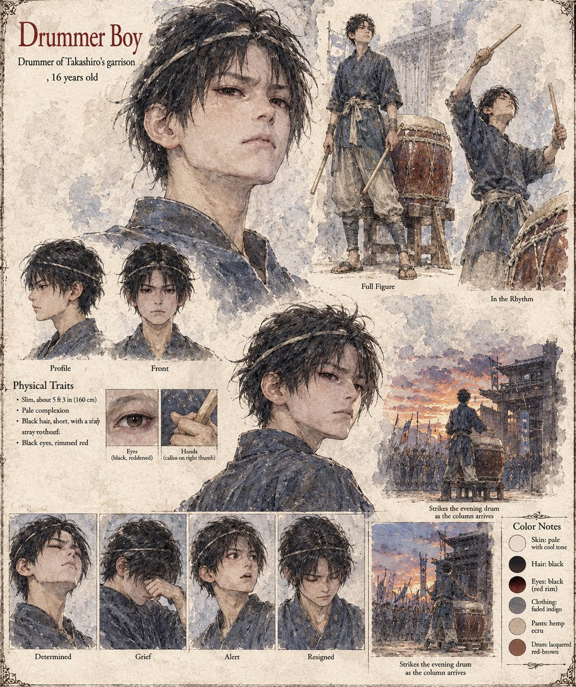

The Drummer Boy of Takashiro
Drummer of Takashiro’s garrison · a boy of sixteen · strikes the evening drum as the column arrives · 16, by the manuscript
A boy of sixteen, the drummer of Takashiro’s garrison, who strikes the evening drum at the gatehouse as the column arrives. The drum has stopped meaning anything, and he goes on drumming anyway, until Norimasa, who has ordered the garrison to hold the gate rather than the road, comes and lays a hand over the drumstick.
His age is the manuscript’s, and every other detail is the pack’s. The sheet draws him slim at about 5 ft 3 in, pale from guard-house shade, with a round boyish face and a flat serious mouth, short black hair with a plain cord tied across the brow, black eyes rimmed red from holding back tears, a thick callus along the right thumb, a faded indigo garrison jacket, ecru hemp trousers wrapped at the calf and straw sandals. He stands at a lacquered red-brown drum on a wooden stand with two pale oak sticks. Its panels are Determined, Grief, Alert and Resigned, and its scenes show him full length, mid-stroke with one arm high, and twice at the gatehouse at sunset before a gathered crowd, captioned Strikes the evening drum as the column arrives.